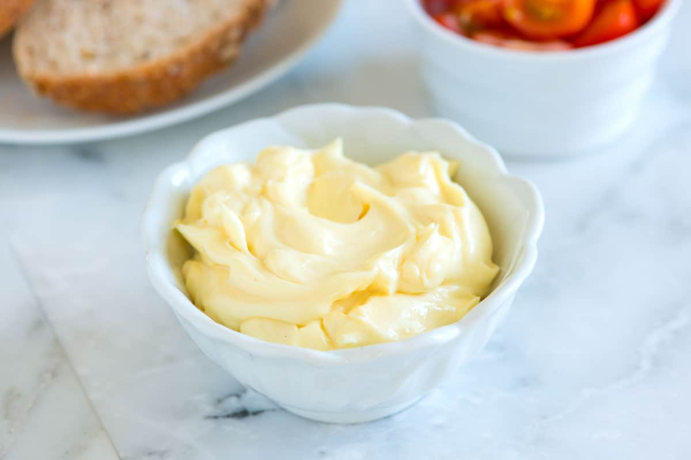

Mayonnaise recipe

Description
Delicious and easy to make mayonnaise as your own dip for fries, spread or whatever you want!
mustard
2 egg
vinegar
oil
Directions
Prepare your food processor. I prefer to use the small bowl attachment that came with our food processor to make mayonnaise.
Add an egg to the bowl of your food processor and process for about 20 seconds.
Add mustard, vinegar, and salt then process for another 20 seconds.
Slowly add the oil, in tiny drops, until about a quarter of the oil has been added. Adding the oil slowly is really important. If you were to dump it all in at once, you’d have mayonnaise soup!
Taste the mayonnaise and adjust with additional salt and vinegar or lemon juice.